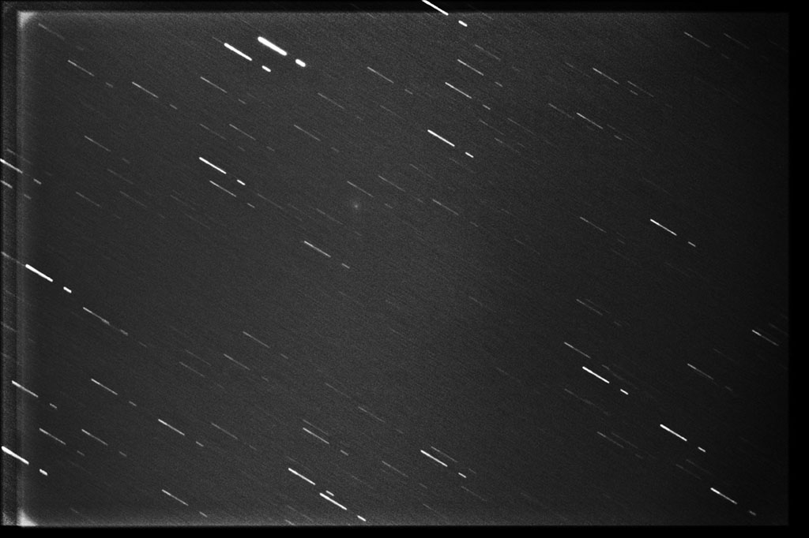

Shot with a Celestron Ultima 8 at prime focus (203 mm), Canon EOS 1100D, LPR filter and f/6,3 focal reducer. 27 frames of 1 minute each 6400 ISO/ASA and 44 frames of 2 minutes each at 32 ISO/ASA (with a 42 minutes gap in the 3200 ASA serie).
Darks, flats, and bias
North is up/right.
Tracking with PhD with a Starlight Lodestar in OAG, registered and stacked with DSS

2013 © Jordi Íñigo Griera | astrosurf.com/jig